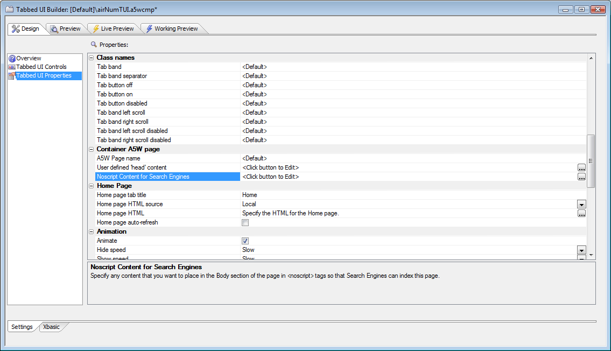

Tabbed UI Component - Search Engines - NoScript Property
When a Search Engine indexes an .a5w page that contains a Tabbed UI component, there is not much content on the page for the Search Engine to index. That's because the bulk of the page contents comes from Ajax callbacks that populate the various tabs on the page. You can now put text into a new 'Noscript content' property in the component. The text that you enter here is wrapped in <noscript></noscript> tags, and placed in the BODY section of the .a5w page that runs the Tabbed UI component. This text can be seen and indexed by Search Engines.Note that you can place any A5W content in this section. So, for example, you might want to populate this section from a database query, and/or use replaceable strings to display static content in different languages.
Search engines typically do not support JavaScript, one of the requirements for Ajax, which is why they will see the contents of the <noscript> section and not the dynamic grid contents. They will see the saved HTML preview for the grid, but that content is static. By using a database query in your <noscript> section, you can show the search engine the latest information that your application can display. In general, search engines will give a higher ranking to pages with current content than pages with outdated content.
